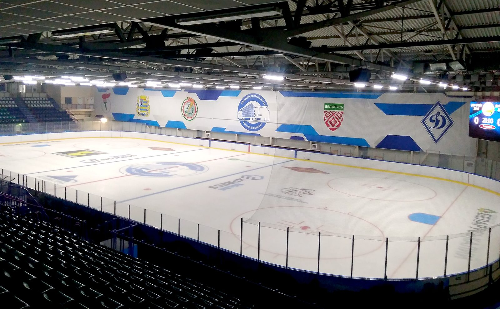

Школам
Час льда куплен заранее и сгорает, даже если на нём никого нет. Набор идёт в сентябре, и идёт он там, где родители ищут каток. Мы — единственное место, где они ищут каток и видят, кто на нём учит.
Лёд школы · эта неделяпример интерфейса
Свободные часы — можно занять
Один клик — и свободный час уходит в набор: появляется на странице арены, в вашей витрине и в уведомлениях родителям, которые уже у вас занимаются.
Лёд как ресурс, а не как расход
Часы, заполняемость, себестоимость часа и маржа по каждой группе. Видно, какой час не окупается — и что с ним сделать сегодня.
Набор идёт там, где родители ищут каток
Группы школы стоят на страницах арен рядом с расписанием катаний — арен в городах. Не реклама, а то же место, куда родитель и так пришёл.
База принадлежит школе
Группы, абонементы и родители закреплены за школой, а не за тренером. Тренер уходит — ученики остаются. Передача группы — в два касания.
Деньги по-взрослому
Абонементы от имени школы, оплата картой и ЕРИП, счёт на юрлицо и закрывающие документы. Один счёт за всю команду.

ВВаша школапример
Группы с набором
Так школа выглядит на странице арены — под расписанием массовых катаний, там же, где родитель смотрел, куда пойти в субботу. Ваш логотип, ваш цвет, ваши группы.
Вся команда на одном экране и каждый тренер отдельно. Родитель заходит одним аккаунтом на двоих детей и видит остаток абонемента. Приглашение тренера в ростер — одной ссылкой.
Первые школы Минска · переносим базу и расписание за вас
Кататься
Расписание массовых катаний всех арен города в одном месте, без обзвона и без сайтов катков. Рядом — тренеры, которые работают на этом льду.
Лёд города на сегодня и на неделю вперёд открывается обычной ссылкой — Telegram для просмотра не нужен. Рядом с ареной видно тренеров, которые на ней работают.
Бесплатно · без регистрации и установки